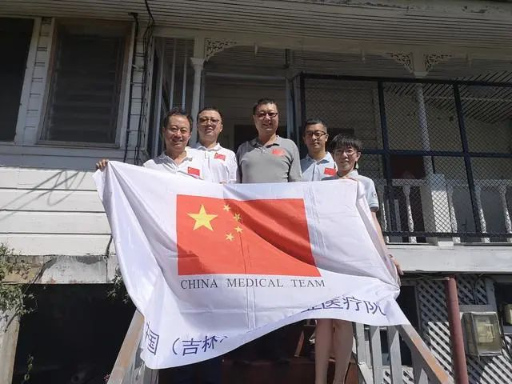
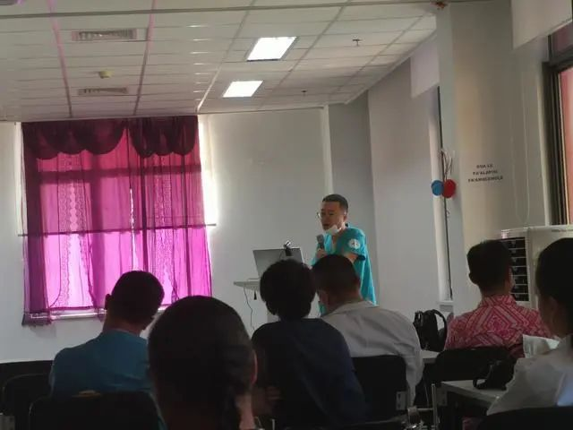

截至当地时间4月25日，南太平洋岛国萨摩亚仍保持着无一例新冠肺炎确诊病例的记录。
萨摩亚首席疫情防控专家汉塞尔表示，“预防是最好的治疗。萨摩亚至今零确诊，我们要感谢中国！”
地处赤道附近的萨摩亚，人口约20万，医生不足百人，只有一家综合性医院，防疫用品完全依赖进口和援助。在新冠疫情全球蔓延的严峻形势下，萨摩亚为何至今能够实现零确诊？
中国（吉林）第三批援萨医疗队，居中为王永刚
中国（吉林）第三批援助萨摩亚医疗队队长王永刚在接受长安街知事（微信ID：Capitalnews）采访时揭示了其中的“秘诀”：当地借鉴中国经验，结合实际情况，采取了和中国高度相似的疫情防控措施，取得了很好的防控效果。
去年8月9日，中国（吉林）第三批援助萨摩亚医疗队一行6人赴萨摩亚。半年后期满，在抗击新冠疫情的关键时刻，他们选择继续留守。除1人因特殊情况于今年2月回国外，其余5人至今每天都奔波在帮助萨摩亚防控新冠疫情一线。
防控疫情期间，王永刚与汉塞尔有过多次沟通。他透露，汉塞尔对中国的防控经验非常认可，尤其在医院的疫情防控管理方面，值得萨方借鉴、应用。
王永刚介绍，4月11日，萨摩亚最后一批所有疑似病例检测结果都是阴性，到目前为止，萨摩亚无疑似新冠肺炎病例，无确诊病例。
“从4月初开始，援萨医疗队对当地疫情情况进行仔细摸底分析。”王永刚说，通过分析当地政府控制疫情的政策发现，其采取的措施能充分体现出“五早”原则，即“早发现、早报告、早调查、早隔离、早治疗”，应收尽收，应治尽治。这些应对措施和中国采取的措施高度相似，效果立竿见影。
中国目前已经基本取得了抗击疫情的胜利。在和中国医疗队一次次深入交流之后，萨方专家希望能够持续和中方专家分享经验。
王永刚表示，目前这种防疫经验分享已经开始常态化，4月15日，援萨医疗队郑医生给当地医院做了疫情防控培训。4月29日将举行第二次例行培训。
援萨医疗队对当地医护人员进行疫情防控培训
长安街知事（微信ID：Capitalnews）此前报道过，中国医生工作的萨摩亚国立医院是该国规模最大也是唯一一家综合性教学医院，2013年由中国援建而成。这家医院也是当地华人华侨就医的主要医院。
目前常住萨摩亚的华人华侨大约500人。进入3月之后，全球疫情严峻，萨摩亚也曾出现过疑似病例，都在医院进行隔离。
“这种情况下，当地华人华侨到医院就诊就很不方便，甚至有恐慌的心理。”王永刚介绍，援萨医疗队专门建了微信群，通过视频会诊，解决了他们遇到的实际问题。
在和援萨医疗队的交流中，当地主要华人华侨团体负责人翁维杰先生多次表示，有祖国医疗队在，他们的心很踏实。
新冠疫情防控期间，当地华人华侨说的最多的一句话就是，有祖国的医生留守萨摩亚，大家感觉更加安全了，对疫情没那么恐惧了。